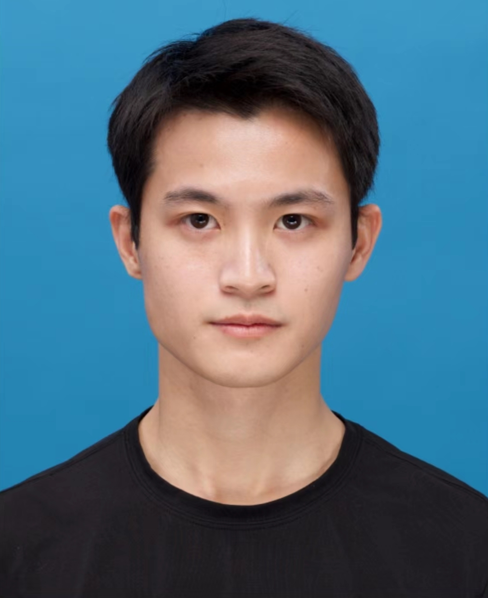

Yun-Ze Li @ LAMDA-SZ
|  | 黎 运 泽 Yun-Ze Li |
|

Biography
-
I have just received a B.Sc. degree in School of Intelligence Science and Technology, Nanjing University.
Research Interests
My current research interests mainly focused on Language Agents and Abductive Learning, with a focus on enabling Language Agents to automatically summarize and reuse knowledge. I aspire to develop agents that can autonomously abstract task-relevant concepts and formulate rules, much like humans do, and apply the acquired knowledge across various contexts.Awards & Honers
Heng Tong Scholarship, NJU in Suzhou, 2024